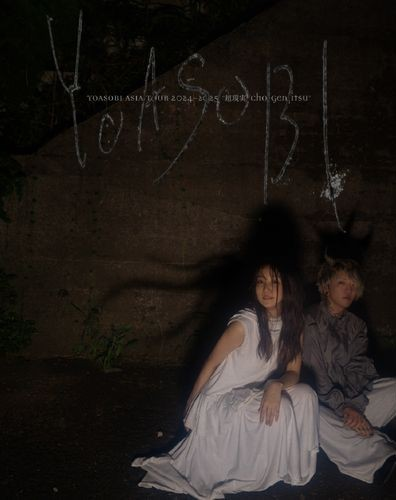

YOASOBI
NEW ALBUM
小說を音樂にするユニット
”YOASOBIのライブ映像作品集 第3彈。
2枚組Blu-rayと、各地でのライブ写真を綴じ込んだ
特製バインダー付きの豪華仕様。

LIVE
YOASOBI ASIA TOUR 2024-2025
“超現実 cho-genjitsu”
LIVE IN TAIPEI
TAIPEI ARENA 2025.2.8 sat - 9 sun